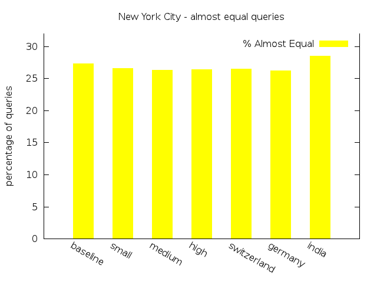
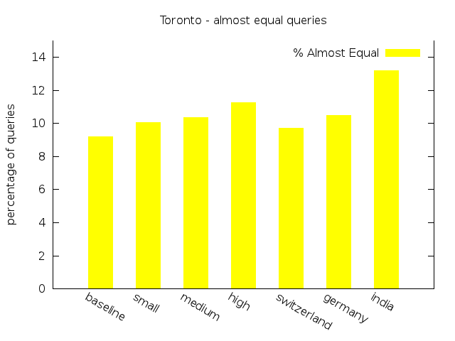

Transit Planner
An experiment on transfer patterns robustness in the presence of real-time updates
Results
On this page we present the setting and results of our experiments.
Experimental Setup
We compute the transfer pattern database for the original transit network created for one service day. To evaluate the effect of delay on the correctness of transfer patterns routing, we modify the original trips according to the selected scenario. We run transfer pattern shortest path queries with the original transfer patterns using direct connection data stemming from the modified GTFS data. The result of that query is compared to the result of a Dijkstra on the modified network. For each dataset and each scenario, including the original network, we run 15,000 random queries.
To reduce the precomputation time of the transfer patterns, we limit the search from each stop to three transfers maximum. As a result of this, hub-based transfer pattern queries may find paths with up to six transfers.
In times of low transit activity, e.g. during the night, many routes require more transfers than in regular periods. Due to the three-transfers-restriction the reference Dijkstra cannot find a suitable shortest path, although it often searches the whole network. In order to reduce the number of empty query responses and thereby reducing the time needed to conduct the experiments, we restricted the query time between 6am and 6pm. Depending on the dataset, we can still compare about 13,000 of the 15,000 performed queries.
Test Networks
All tests are performed on two data sets: Toronto and New York City. Toronto, which stems from a single GTFS feed, has a network of 10,883 stops, 40,651 trips, 4,498,284 nodes and 7,434,641 arcs. The New York City data set comprises the GTFS feeds of the subway, the bus networks for all five boroughs and the NYC bus company’s data, set and has 16,765 stops, 61,474 trips, 6,880,107 nodes and 11,372,629 arcs for a single day. Note that the GTFS data needs some preprocessing (sorting, replace special characters etc.) to be understood by our parser. The actual data we used to conduct the experiments can be found in the code section.
For each dataset we test 7 different scenarios. The first
represents the Original transit network of a given data set without any
delays. The first three scenarios are described by a single delay function
used to update 25% of the trips respectively. They differ in the amount of
delay, applying Low (scenario 1), Medium (scenario 2) and High (scenario 3)
delay.
The remaining three scenarios are a
combination of delay functions. Scenario 4 represents a good working transit
network with a small percentage of trips with little delay (10% with 5
minutes, 3% with 15 minutes, 1% with 50 minutes). Scenario 5 delays 20 per
cent of all trips for 5 minutes, 10 per cent for 15 minutes and 5 per cent
for 50 minutes. The last scenario induces a delay for all trips in the
network. 40% of all trips are delayed with Low, 40% Medium and 20% with High. We call the latter
scenarios "Switzerland", "Germany", and "India".
Scenarios
| # | Name | Delay Frequency A [%] | Delay Time A [min] | Delay Frequency B [%] | Delay Time B [min] | Delay Frequency C [%] | Delay Time C [min] |
|---|---|---|---|---|---|---|---|
| 0 | Original |
- | - | - | - | - | - |
| 1 | Low |
25 | 5 | - | - | - | - |
| 2 | Medium |
25 | 15 | - | - | - | - |
| 3 | High |
25 | 50 | - | - | - | - |
| 4 | "Switzerland" |
10 | 5 | 3 | 15 | 1 | 50 |
| 5 | "Germany" |
20 | 5 | 10 | 15 | 5 | 50 |
| 6 | "India" |
40 | 10 | 40 | 10 | 20 | 50 |
Evaluation
For each query we compare the result of the Dijkstra search with the result of the transfer pattern search. If for each path found by the Dijkstra search there is a path of equal costs found by the transfer patterns search, the query is classified as Equal. If this criteria fails for a query, but the costs of the corresponding paths differ at most by 20% and the penalties differ at most by 1, the query is classified as Almost Equal. In all other cases, if there is at least one optimal path which has no matching transfer pattern path, the queries are classified as Failing.
In a first set of experiments we limited the paths to 3 transfers (not listed here, results are a subset of the presented experiments). In the second series we did not limit the number of transfers. To force the Dijkstra to similar routes as Transfer Pattern Routing, we initially limit the Dijkstra to 3 transfers and lift this restriction for paths that transfer at a hub. In the seconds setting, the structure of the query graph allows for paths with more than 3 transfers without traversing a hub. Refer to the implementation of the query graph for further information. This leads to query responses where Transfer Pattern Routing finds a hub-free path with cost A, while the path found by the Dijkstra transfers at a hubs and has cost B (with A < B). In the second series of experiments we have the additional class Long paths without hub for such queries.
| Scenario | Total | Empty | Equal | Almost Equal | Failing | Long paths without hub |
|---|---|---|---|---|---|---|
Original |
15,000 | 1,750 | 8,723 (65.83%) | 3620 (27.32%) | 315 (2.38%) | 592 (4.47%) |
Low |
15,000 | 1,695 | 8,824 (66.32%) | 3,536 (26.58%) | 329 (2,47%) | 616 (4,63%) |
Medium |
15,000 | 1,774 | 8,690 (65.70%) | 3,474 (26.27%) | 376 (2.84%) | 686 (5.19%) |
High |
15,000 | 1,644 | 8,730 (65.36%) | 3,531 (26.44%) | 378 (2.83%) | 717 (5.37%) |
Switzerland |
15,000 | 1,786 | 8,754 (66.25%) | 3,499 (26.48%) | 351 (2.66%) | 610 (4.62%) |
Germany |
15,000 | 1,707 | 8,768 (65.96%) | 3,488 (26.24%) | 358 (2.69%) | 679 (5.11%) |
India |
15,000 | 1,767 | 8,319 (62.87%) | 3,772 (28.50%) | 410 (3.10%) | 732 (5.53%) |


| Scenario | Total | Empty | Equal | Almost Equal | Failing | Long path without hub |
|---|---|---|---|---|---|---|
Original |
15,000 | 1,501 | 11,720 (86.82%) | 1,240 (9.19%) | 145 (1.07%) | 394 (2.92%) |
Low |
15,000 | 1,447 | 11,648 (85.94%) | 1,364 (10.06%) | 160 (1.18%) | 381 (2.81%) |
Medium |
15,000 | 1,396 | 11,645 (85.60%) | 1,408 (10.35%) | 168 (1.23%) | 383 (2.82%) |
High |
15,000 | 1,437 | 11,468 (84.55%) | 1,528 (11.27%) | 187 (1.38%) | 380 (2.80%) |
Switzerland |
15,000 | 1,489 | 11,644 (86.18%) | 1,312 (9.71%) | 148 (1.10%) | 407 (3.01%) |
Germany |
15,000 | 1,416 | 11,590 (85.32%) | 1,425 (10.49%) | 168 (1.24%) | 401 (2.95%) |
India |
15,000 | 1,401 | 11,145 (81.95%) | 1,794 (13.19%) | 231 (1.70%) | 429 (3.15%) |


Analysis
The scenarios can be subdivided in three groups: The
baseline with the Original scenario, scenarios 1 - 3 as
artificial scenarios with only one delay function and the
scenarios 4 - 6 as real-world scenarios with combinations of different
delay functions.
To explain the remaining share of non-equal queries for the baseline, we refer to the discussion of problems our implementation still has.
We start our analysis of the results examining the relationship between the individual scenarios within each group. For the NYC dataset the percentage of queries classified as Equal decreases with more delay, whereas the percentages of queries classified as Failing increases. The same aspect can be found for the real-world scenario group and the NYC dataset. The queries classified as Almost Equal behave quite similar, except for the experiments on New York City with unlimited transfers. In this setting there is a minor shift from Almost Equal to Equal for the first scenarios.
For the Toronto dataset the percentage of Failing and Almost Equal queries in the real-world group show a more or less ascending order. The same results can be observed for New York City. For both data sets the third scenario of both groups exhibit the smallest share of Equal queries and the largest percentage of Almost Equal and Failing queries. As expected, delay has an observeable influence to the quality of the routing results.
In general, the results show that with increasing average amount of delay the percentage of Equal queries decreases only slightly. For queries which lose their status as Equal, the transfer pattern search in some cases found alternative routes with acceptable costs classified as Almost Equal. The share of this class of queries rises compared to the baseline by at most 3.0% for Toronto and by 1.18% for New York City. There is the tendency of an increasing amount of Long paths without hub. Just in a few cases the search fails due to a lack of alternative transfer patterns and the query is classified as Failing. The differences between the share of Failing in the baseline and in the worst scenarios is not big enough to speak of a pejoration: There are 0.67% more failings queries for Toronto, and 0.72% for NYC.
Comparing the values of both data sets to each other it becomes obvious that the quality of the queries for Toronto is better than for New York City, generally having more queries classified as Equal and less as Almost Equal or Failing. This may be caused by the size and structure of the transit network, allowing for longer travels with more transfers in New York. As the delay increases, the percentage of Equal falls faster for Toronto (share is 4.87% smaller in the worst scenario) than for New York City (2.96% decrease compared to baseline). For the latter, there are even two scenarios where the share of such queries slightly increases. We may infer from these observations that the robustness of Transfer Pattern Routing towards real-time updates depends on the structure of the underlying transit network.
Performance Recap
| Algorithm | Average | Median | 90%-ile | 99%-ile | Min | Max |
|---|---|---|---|---|---|---|
| Dijkstra | 2,169 | 1,763 | 3,487 | 6,673 | 1,093 | 8,635 |
| Transfer Patterns | 27 | 29 | 43 | 56 | 1 | 78 |
| Algorithm | Average | Median | 90%-ile | 99%-ile | Min | Max |
|---|---|---|---|---|---|---|
| Dijkstra | 1,546 | 1,270 | 2,552 | 4,124 | 736 | 5,694 |
| Transfer Patterns | 10 | 10 | 15 | 21 | 1 | 26 |
| Network | Average | Median | 90%-ile | 99%-ile | Min | Max |
|---|---|---|---|---|---|---|
| NYC | 2,143 | 2,264 | 2,969 | 3,496 | 0 | 4,247 |
| Toronto | 1,624 | 1,643 | 2,115 | 2,522 | 0 | 3,390 |